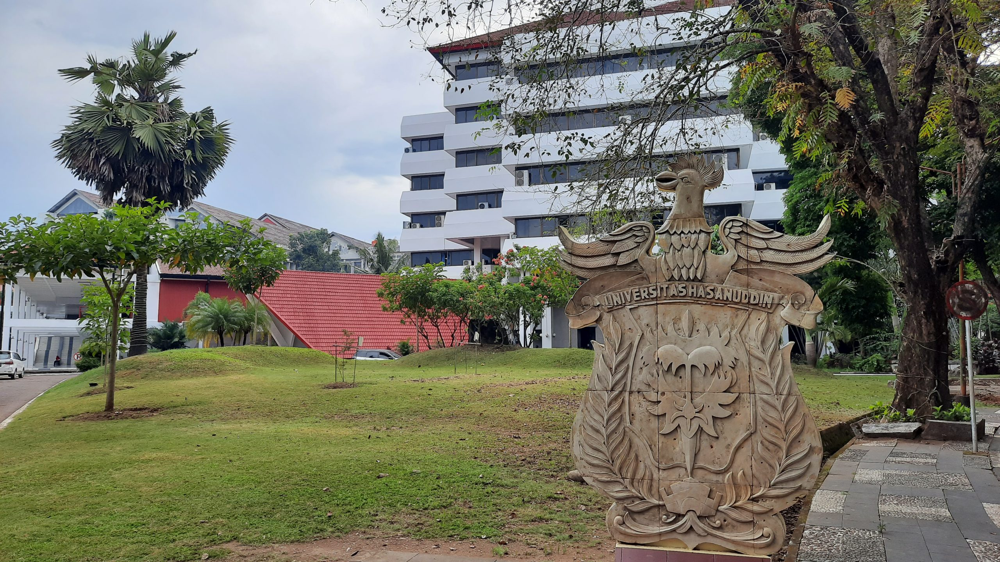
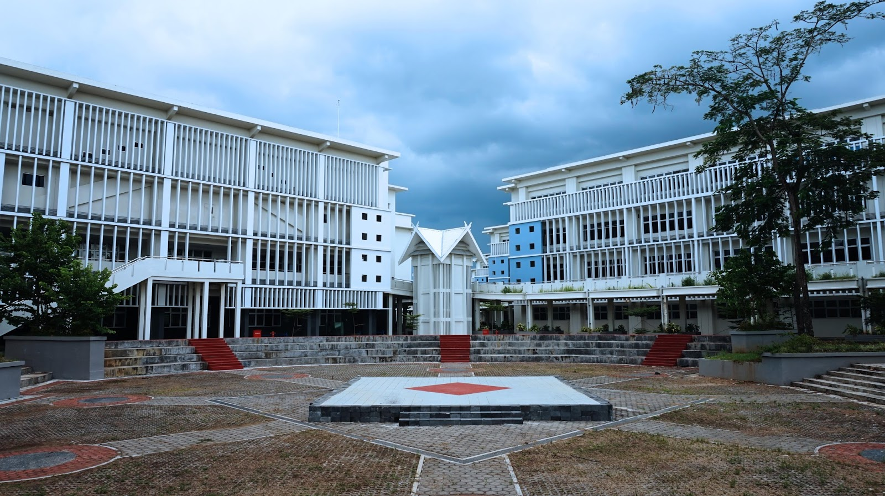

Sejarah

Universitas Hasanuddin (Unhas) secara resmi berdiri pada tanggal 10 September 1956. Nama institusi ini diambil dari nama pahlawan nasional, Sultan Hasanuddin, yang merupakan Raja Gowa ke-16 yang dijuluki "Ayam Jantan dari Timur" karena keberaniannya.
Cikal bakal Universitas Hasanuddin bermula dari Fakultas Ekonomi yang merupakan cabang dari Universitas Indonesia di Jakarta. Setelah melalui berbagai perkembangan, Unhas akhirnya menjadi perguruan tinggi negeri mandiri dan terus berkembang menjadi salah satu pusat pendidikan terkemuka di Indonesia.
Jumlah Jurusan dan Total Mahasiswa

Hingga saat ini, Universitas Hasanuddin memiliki belasan Fakultas dengan puluhan program studi yang mencakup berbagai disiplin ilmu, mulai dari Ilmu Kesehatan (Kedokteran, Farmasi), Sains dan Teknologi (Teknik, MIPA, Informatika), hingga Ilmu Sosial dan Humaniora.
Sebagai kampus terbesar di wilayah timur, Unhas menampung populasi mahasiswa yang sangat besar. Tercatat ada lebih dari 35.000 mahasiswa aktif yang sedang menempuh pendidikan baik di tingkat Sarjana (S1), Magister (S2), maupun Doktoral (S3). Ekosistem akademik yang masif ini menjadikannya tempat bertemunya mahasiswa dari berbagai penjuru nusantara.
Prestasi
Sebagai Perguruan Tinggi Negeri Badan Hukum (PTN-BH), Unhas memiliki sederet pencapaian di kancah nasional maupun internasional, di antaranya:
- Masuk dalam jajaran top Universitas di Indonesia versi QS World University Rankings.
- Sering menjadi langganan juara di berbagai kompetisi bergengsi mahasiswa nasional seperti Gemastik, PIMNAS, dan kompetisi debat.
- Banyak program studinya yang telah mendapatkan akreditasi internasional bergengsi (seperti ABET dan ASIIN).
- Memiliki pusat-pusat penelitian unggulan yang berkontribusi pada pengembangan teknologi dan sosial di Indonesia.